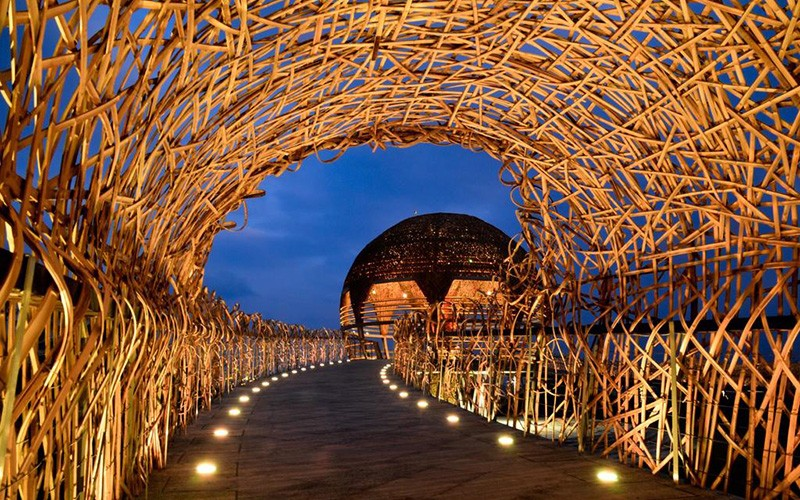
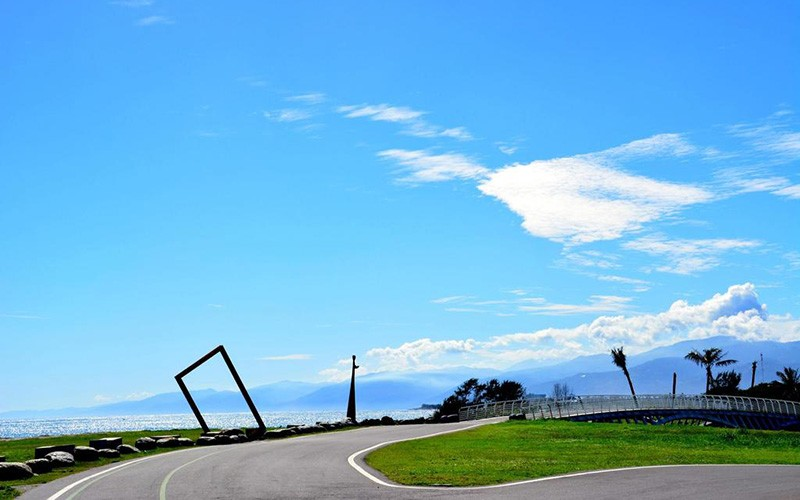
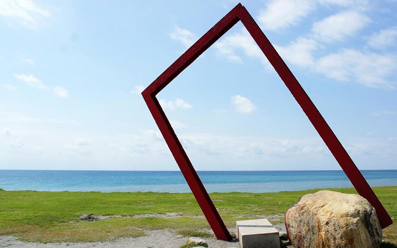
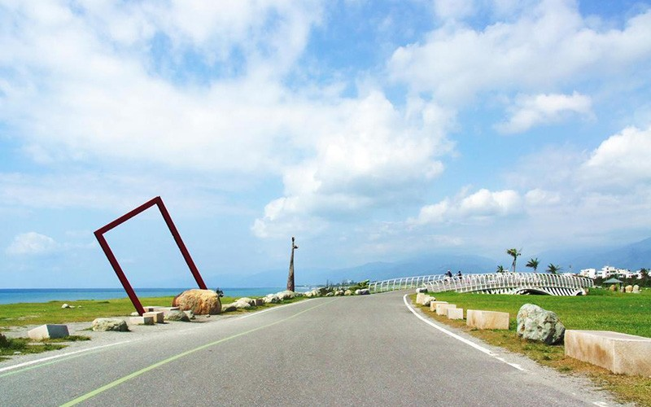
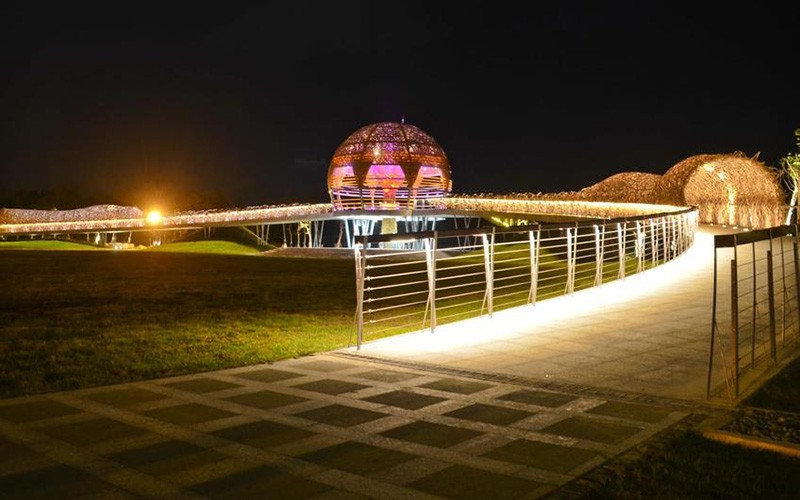
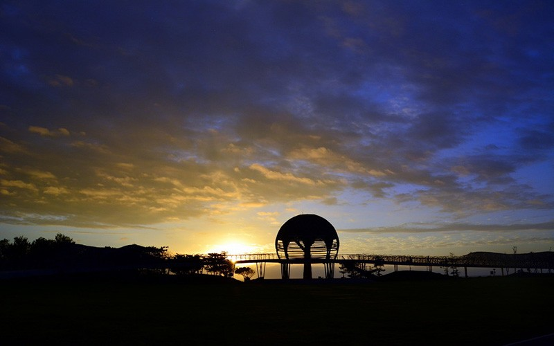
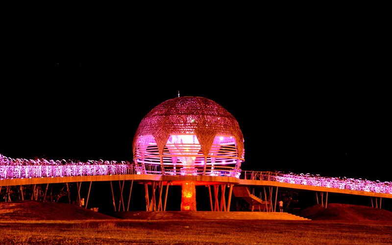
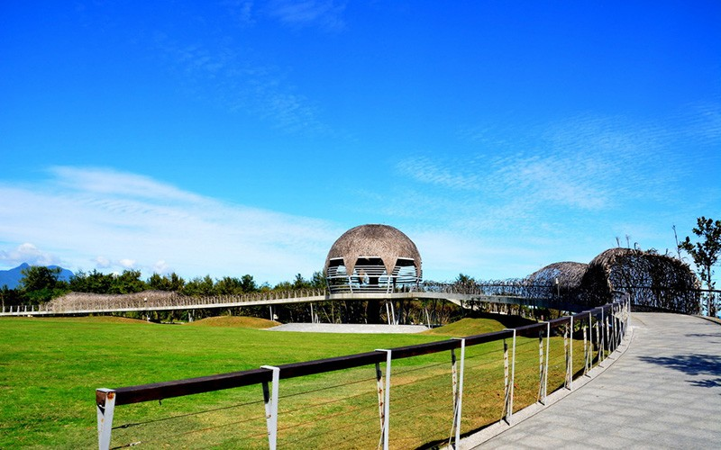
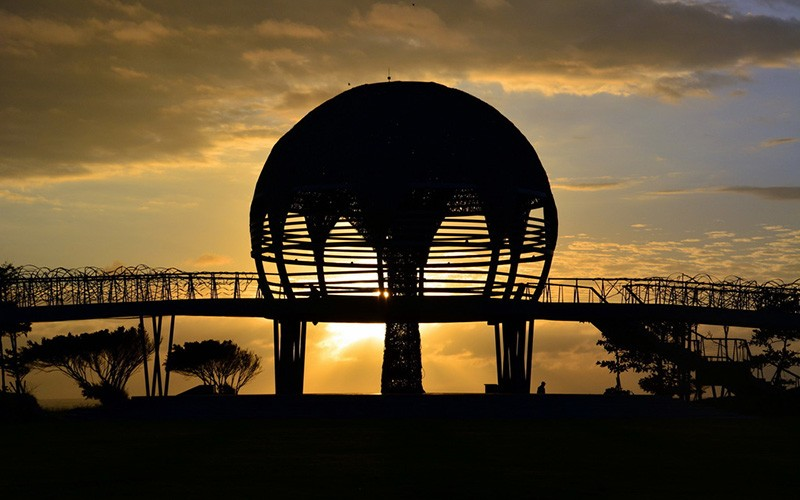
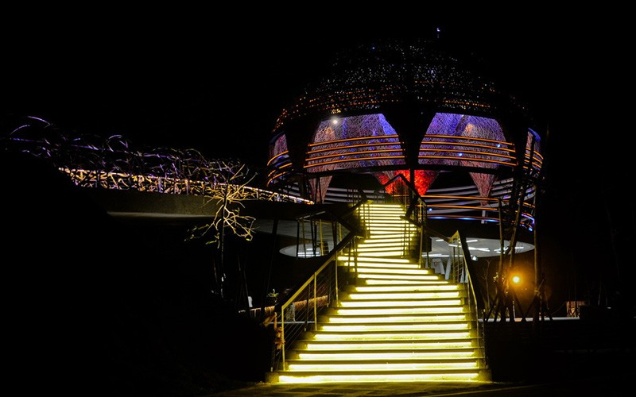
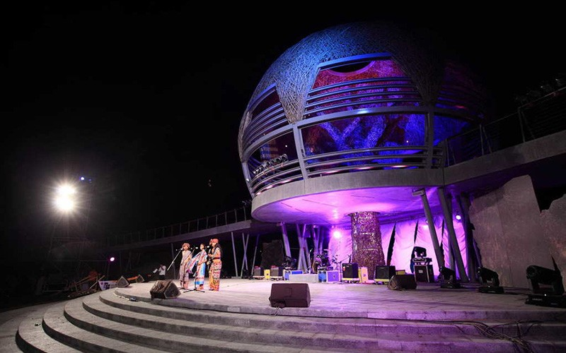
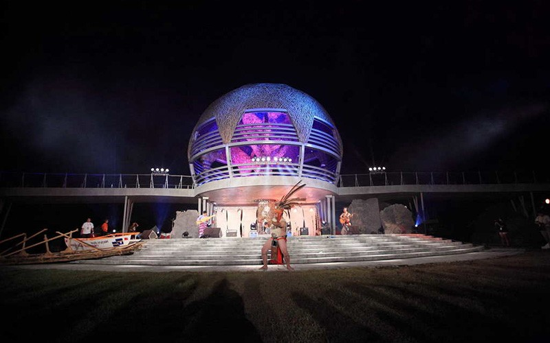
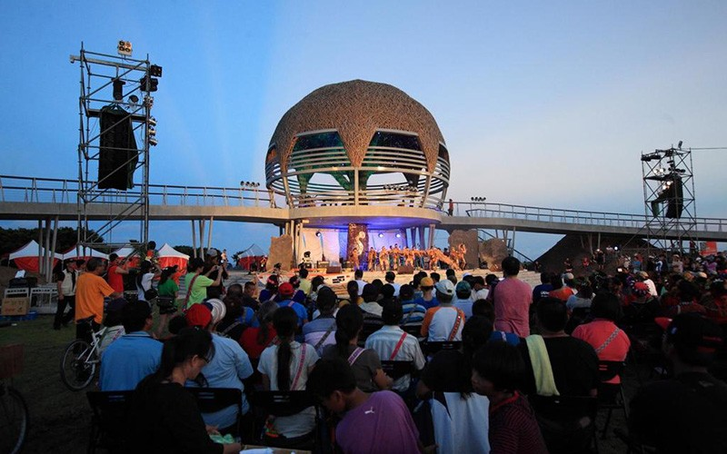
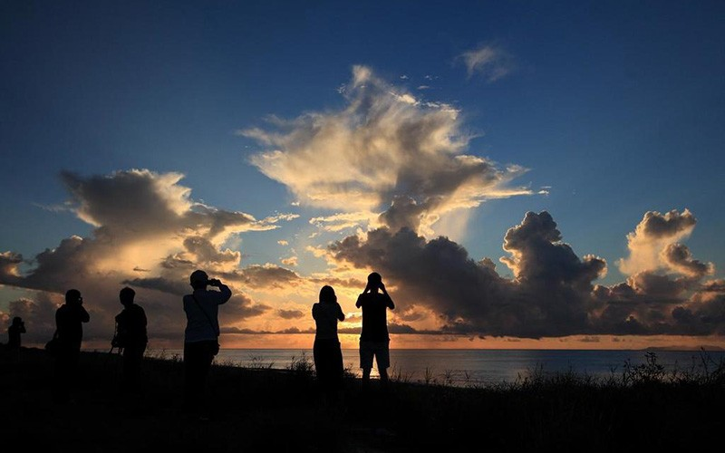
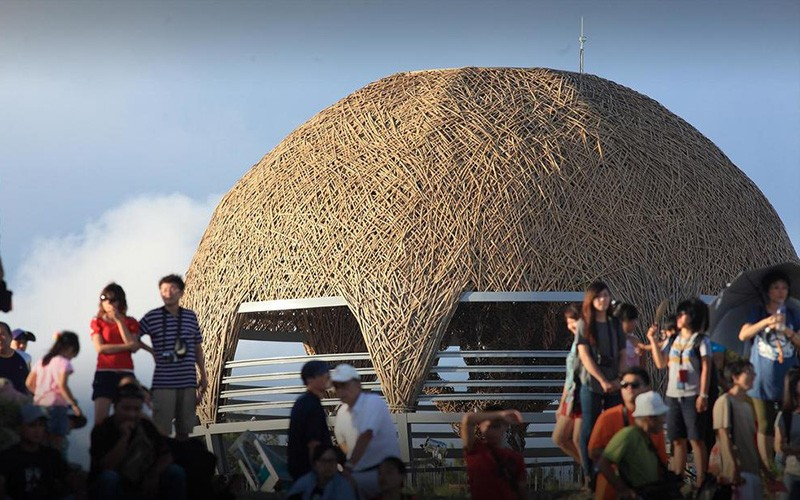
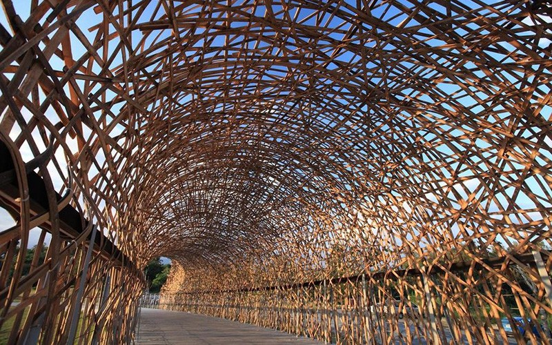
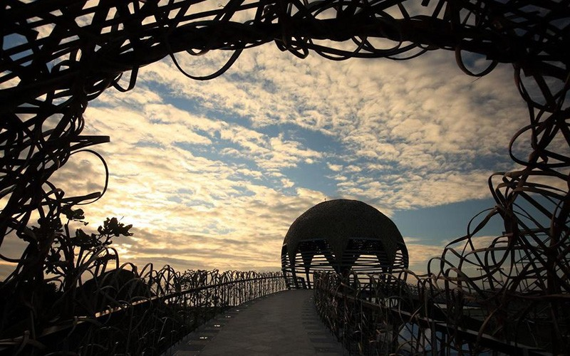
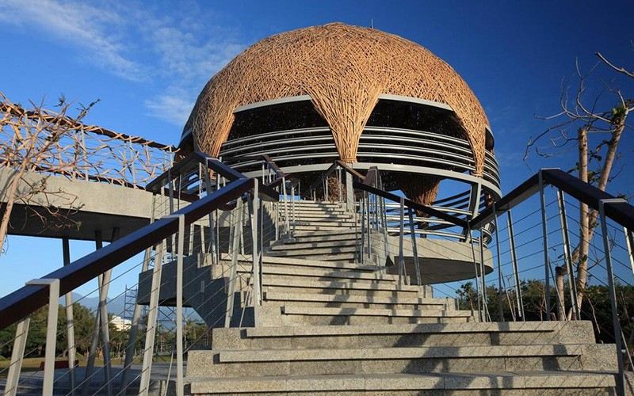
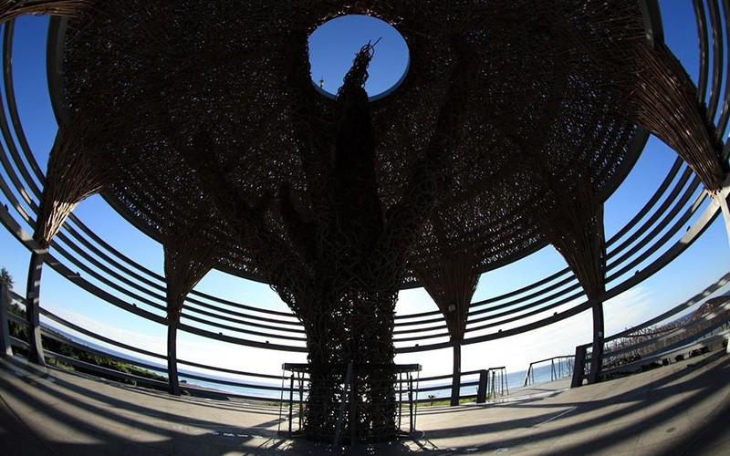
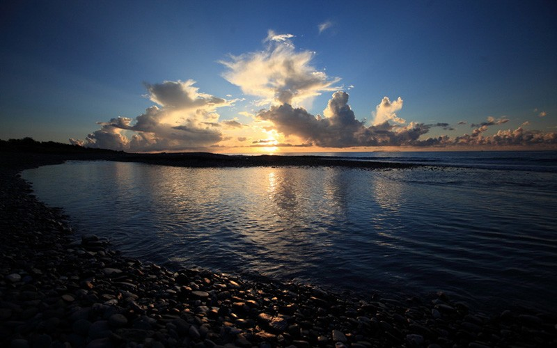
國際地標(海濱公園)
佇立在臺東海濱公園的國際地標，融合地景與公共藝術，標誌臺東獨特的人文、歷史與自然景觀，獨樹一格的藤編屋頂造型讓人眼睛一亮。國際地標靜靜佇立海岸，白天，它迎接清晨的第一道曙光，夜晚，暈黃燈光照耀，輝煌燦爛，彷彿期盼著世界的眼光。
介紹
臺東是一塊不同族群交會與融合的土地，國際地標兩端分別為一道斜坡與階梯，以此象徵兩股力量的匯集，屋頂使用圓型代表團結，呈現生生不息、在地著根、向上提升的生命力。
國際地標座落在臺東海濱公園，園區內有人文主題步道、劇場、廣場、湧泉地景以及公共藝術，是一處以「人」為主的空間，空間設計與一望無際的太平洋相互呼應，人們可以在這裡駐足聽濤、賞海，感受海洋氣息，清晨時分，與國際百年地標一起迎接曙光，開始活力的一天。這裡也是藝文表演的絕佳舞臺，音樂與海潮聲交織成動人的樂章，舞臺下的聽眾隨著音樂搖擺身體，一起享受音樂無國界的自由氣氛。
國際地標結合人、海、文化、歷史等意象，賦予海濱公園全新的生命，黑夜白天各有獨特風華，請你一起來感受。
－敬請遊客遵守以下事項－
1、不得開車與騎乘機車、自行車進入園區及觀景台。
2、不得吸菸與嚼食檳榔，並不得隨地吐檳榔汁。
3、不得私自燃放炮竹。
4、避免攀爬行為，以策安全。
5、請將垃圾帶離，不得隨意丟棄。
6、如寵物便溺，請飼主自行清理。
7、其他破壞現場遊憩品質之行為，如烤肉、大聲喧嘩等。
特色
◆ 寶桑
卑南平原的東方海岸，昔日慣稱其為「寶桑」，為一阿美族部落名，意指突出地面的小山丘。清光緒年間，清廷在此地設「卑南廳」，之後改名為「臺東州」。日據時期，稱為「卑南街」，西元1919年，因此地位於臺東的東部，改稱「臺東街」。
西元1945年，中華民國政府更名為「臺東鎮」，1976年元旦升格為「臺東市」。
【資料來源：臺東觀光旅遊網】
國際地標(海濱公園)佇立在臺東海濱公園的國際地標，融合地景與公共藝術，標誌臺東獨特的人文、歷史與自然景觀，獨樹一格的藤編屋頂造型讓人眼睛一亮。國際地標靜靜佇立海岸，白天，它迎接清晨的第一道曙光，夜晚，暈黃燈光照耀，輝煌燦爛，彷彿期盼著世界的眼光。介紹臺東是一塊不同族群交會與融合的土地，國際地標兩端分別為一道斜坡與階梯，以此象徵兩股力量的匯集，屋頂使用圓型代表團結，呈現生生不息、在地著根、向上提升的生命力。國際地標座落在臺東海濱公園，園區內有人文主題步道、劇場、廣場、湧泉地景以及公共藝術，是一處以「人」為主的空間，空間設計與一望無際的太平洋相互呼應，人們可以在這裡駐足聽濤、賞海，感受海洋氣息，清晨時分，與國際百年地標一起迎接曙光，開始活力的一天。這裡也是藝文表演的絕佳舞臺，音樂與海潮聲交織成動人的樂章，舞臺下的聽眾隨著音樂搖擺身體，一起享受音樂無國界的自由氣氛。國際地標結合人、海、文化、歷史等意象，賦予海濱公園全新的生命，黑夜白天各有獨特風華，請你一起來感受。－敬請遊客遵守以下事項－1、不得開車與騎乘機車、自行車進入園區及觀景台。2、不得吸菸與嚼食檳榔，並不得隨地吐檳榔汁。3、不得私自燃放炮竹。4、避免攀爬行為，以策安全。5、請將垃圾帶離，不得隨意丟棄。6、如寵物便溺，請飼主自行清理。7、其他破壞現場遊憩品質之行為，如烤肉、大聲喧嘩等。特色寶桑卑南平原的東方海岸，昔日慣稱其為「寶桑」，為一阿美族部落名，意指突出地面的小山丘。清光緒年間，清廷在此地設「卑南廳」，之後改名為「臺東州」。日據時期，稱為「卑南街」，西元1919年，因此地位於臺東的東部，改稱「臺東街」。西元1945年，中華民國政府更名為「臺東鎮」，1976年元旦升格為「臺東市」。
International Landmark (Seashore Park) The International Landmark stands in Taitung Seashore Park, integrating the landscape and public art to exhibit unique cultural, historical, and natural traits of Taitung. The International Landmark, with its impressive one-of-a-kind rattan roof design, welcomes morning’s first light, and it spreads glorious yellow light at night as if it is expecting attention from the world. Introduction Taitung is a place where different ethnic groups meet and integrate. On both sides of the International Landmark are respectively a slope and stairs, symbolizing the gathering of two stream of powers. The roof has a rounded shape to represent unity, showing that the vitality in Taitung is everlasting, locally rooted, and is growing upward. The International Landmark is located in Taitung Seashore Park, where there are trails featuring cultural topics, theaters, squares, gushing springs, and public art. It is a people-oriented place where the space design calling out to the Pacific Ocean. You can welcome morning’s first light with the century-old International Landmark and energetically start your day. This is also an excellent stage for art performances, where music and the sound of waves blend into a touching symphony. The audience members move their bodies with the music, enjoying the free tunes in a place where music knows no bounds. The International Landmark integrates images of people, the ocean, culture, and history to give brand new life to Seashore Park. It looks different in the daylight and when it’s dark, so make sure to experience it in the day and at night. －Visitors are required to follow these rules－ 1. No cars, motorcycles, or bicycles in the park or on the observation deck 2. No smoking or chewing betel nut 3. No firecrackers 4. No climbing 5. No littering 6. Clean up after pets 7. Refrain from any conduct that would inhibit the park’s recreation quality, such as barbecuing and making loud noises Feature Pusung The east coast of Beinan Plain used to be called Pusung, the name of an Amis tribe that means “a protruding hill.” During the Guangxu period of the Qing Dynasty, the government set up Beinan Hall here, which was later renamed Taitung State. During the Japanese occupation of Taiwan, it was called Beinan Street. In 1919, the place was renamed Taitung Street because it was located in eastern Taitung. In 1945, it was renamed Taitung Township by the R.O.C. government, and on January 1, 1976, it became Taitung City.
国際地標モニュメント（海浜公園） 台東海浜公園に立つ国際地標モニュメントは、風景に溶け込むパブリックアートとして、台東独特の文化、歴史、自然景観を象徴しており、藤で編んだユニークな屋根のデザインが目を引きます。海岸に静かにたたずむ国際地標モニュメントは、明け方にはどこよりも早く太陽を出迎え、夜にはほのかなオレンジ色の灯りに照らされてきらきら輝きます。その様は、まるで世界中の視線を待っているかのようです。 紹介 台東は、様々なエスニックグループが交わり、融合する土地です。国際地標モニュメントの両端にあるスロープと階段は二つの力が集まっていることを、円型の屋根は団結を象徴し、この地に根ざし、連綿と受け継がれる生命力が立ち昇っていくイメージを表現しています。 この国際地標モニュメントのある台東海浜公園は、文化をテーマにした遊歩道や劇場、広場、噴水、パブリックアートが設置された、「人」を中心した空間となっており、空間デザインは果てしない太平洋に呼応しています。ここでは足を止めて波の音に耳を澄まし、海を眺めながら、その息吹を感じることができます。早朝、国際百年地標モニュメントとともに日の出を迎え、活力に満ちた一日を始めてみてはいかがでしょう。また、芸術文化公演の絶好の舞台でもあり、音楽と潮の音が混ざり合い、感動的なハーモニーを奏でます。舞台下の聴衆は音楽に合わせて身体を動かし、一緒に国境のない音楽の自由な雰囲気を楽しみます。 国際地標モニュメントは、人、海、文化、歴史等のテーマを融合しながら、海浜公園に新たな命を吹き込みました。夜と昼で異なる風情をぜひ感じてください。 －以下の事項をお守りください－ 1、車やバイク、自転車で園内や展望台に入らないでください。 2、喫煙や、檳榔を噛んだり、檳榔を噛んだ汁を地面に吐かないでください。 3、無断で爆竹を鳴らさないでください。 4、安全のため、よじ登らないでください。 5、ごみは周辺に捨てずにお持ち帰りください。 6、ペットの排泄物は飼主が片付けてください。 7、その他、バーベキューや大声で騒ぐなど、他のお客様に迷惑になる行為はご遠慮ください。 特色 宝桑 卑南平野の東方海岸は昔、「宝桑」と呼ばれていました。アミ族の集落の名でもある「宝桑」は、地面に突き出た小高い丘を表します。清の光緒年間、清の朝廷はここに「卑南庁」を設け、後に「台東州」と改名しました。日本統治時代には「卑南街」となり、1919年に台湾の東部にあることから「台東街」と改称されました。 1945年、中華民国政府により「台東鎮」と改名され、1976年元旦に「台東市」に昇格しました。